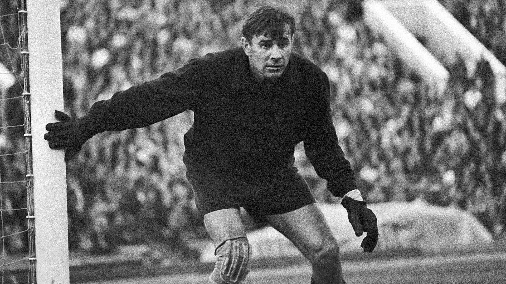
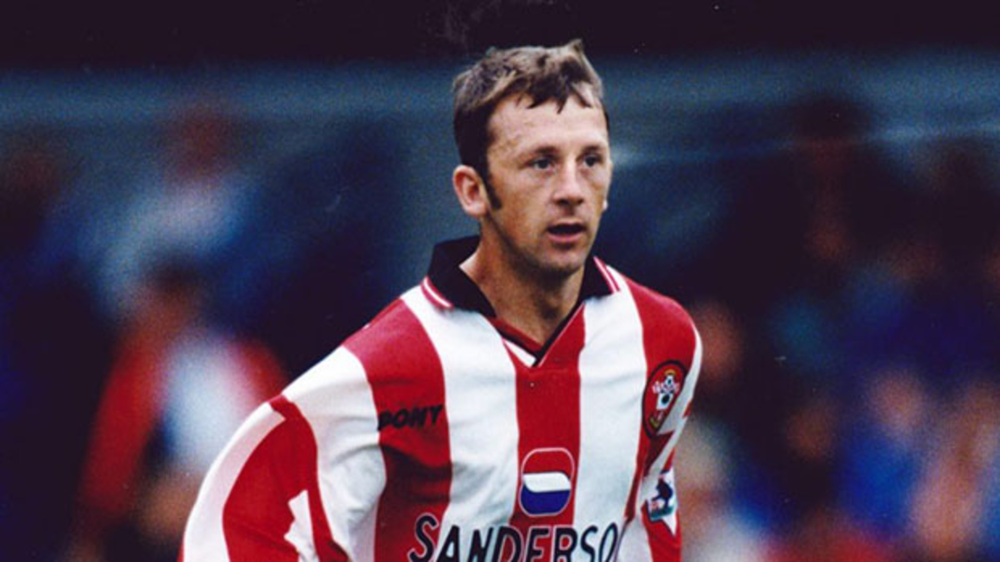
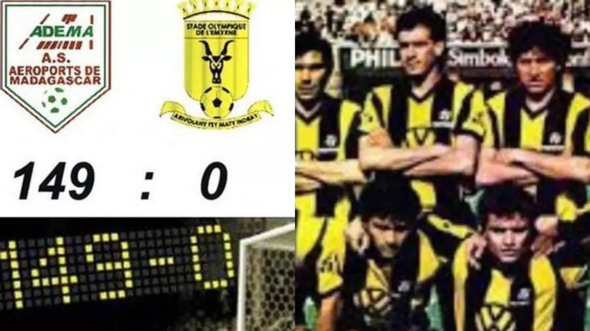
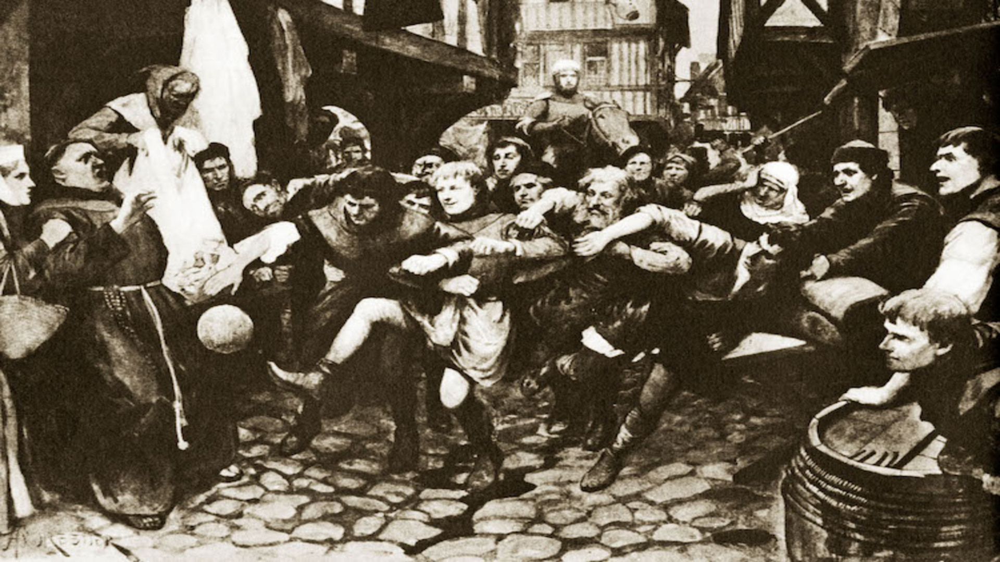
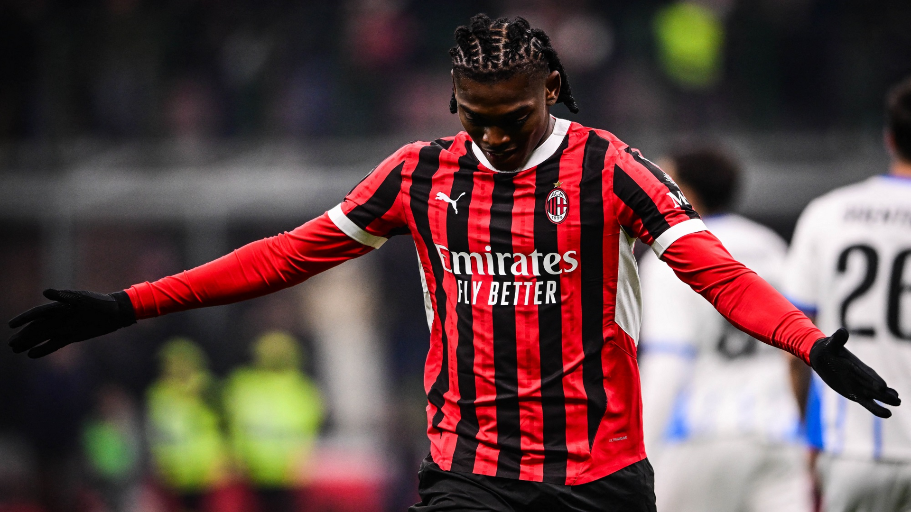
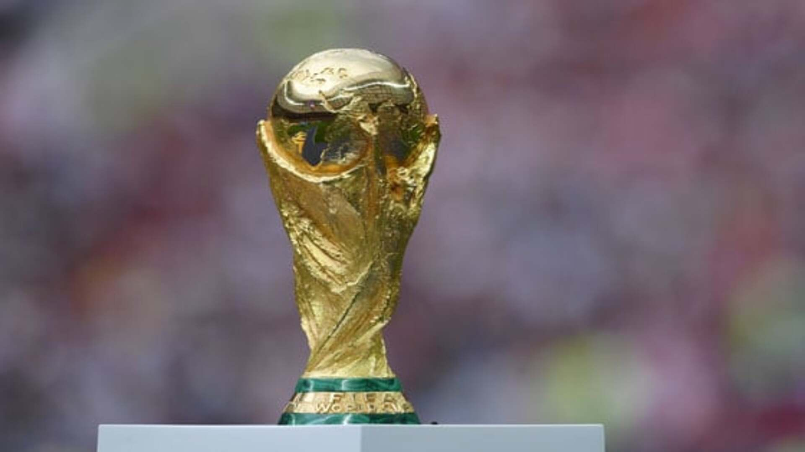

Here are some interesting facts about football Gathred By WikiPedia!
|
Lev Yashin, the legendary Soviet goalkeeper, is the only goalkeeper to have ever won the Ballon d’Or (in 1963). Known as the "Black Spider," he saved over 150 penalty kicks in his career! |
 |
|  |
The fastest red card in football history was given just 2 seconds into a match! Lee Todd was sent off for reacting to the referee’s whistle by saying, “F*** me, that was loud!” |
|
In 2002, AS Adema defeated Stade Olympique de l'Emyrne 149-0 in Madagascar. The losing team intentionally scored own goals in protest against a refereeing decision in a previous game! |
 |
|  |
In the 14th century, King Edward III banned football because it distracted people from practicing archery, which was essential for national defense. |
|
AC Milan holds the record for the longest unbeaten streak in top-flight football, going 58 games without a loss in Serie A between 1991 and 1993. |
 |
|  |
The original Jules Rimet Trophy was permanently awarded to Brazil after their third World Cup win in 1970. However, it was later stolen in 1983 and has never been recovered! |